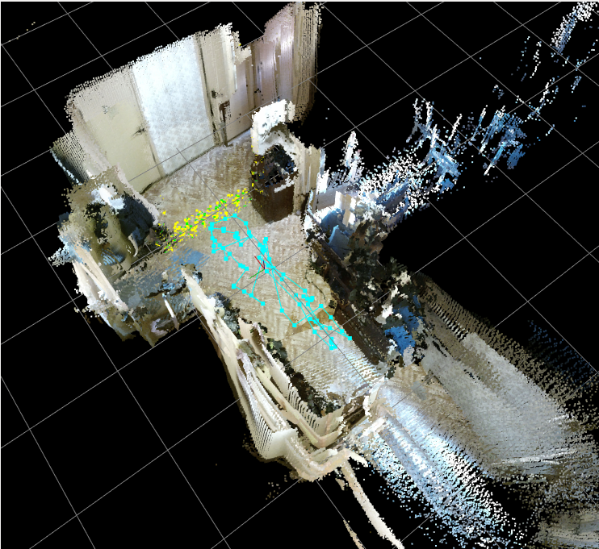
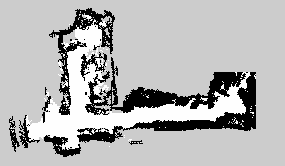

Модель неизвестной среды предполагает следующие допущения:
-
среда является статичной;
-
нет движущихся объектов кроме самого робота.
Данные, полученные с времепролетной камеры и обработанные с помощью
алгоритмов библиотеки RTAB-MAP (выбранной для работы в результате
аналитического обзора), представляют собой цветное облако точек в
декартовых координатах, которые лежат на поверхности объектов
пространства вокруг робота.
Цветное облако точек – это множество точек в трехмерном пространстве, полученных в результате 3D-сканирования объекта реального мира и представляющих поверхность этого объекта. Каждая точка имеет три координаты x, y, z и значение цвета в цветовой модели RGB(Red, Green, Blue).
Максимальное расстояние до объектов, которое может измерять времепролетная камера Microsoft Kinect 2.0, составляет 4,5 м, поэтому запись данных производилась в помещении.
На рисунке 9 представлен вид трехмерной карты, полученной в помещении.

Рисунок 9 – Вид трехмерной карты
Библиотека RTAB-MAP использует в качестве формата выходных данных
файловый формат PCD (Point Cloud Data). Этот файл представляет собой
данные о цветном облаке точек, записанные в памяти компьютера в
определенной последовательности.
Каждый файл PCD содержит заголовок, который идентифицирует и
декларирует определенные свойства данных облаков точек, хранящихся в
файле. Заголовок из PCD должен быть закодирован в ASCII [12].
В заголовке содержатся следующие ключевые слова и переменные:
VERSION – определяет версию файла PCD;
FIELDS – определяет имя каждого измерения;
FIELDS x y
z
# XYZ данные
FIELDS x y z
rgb
# XYZ + цвет
FIELDS x y z normal_x normal_y
normal_z # XYZ + нормали к
поверхности
FIELDS j1 j2
j3
# Момент изображения
SIZE – определяет размер каждого измерения в байтах;
TYPE – определяет тип каждого измерения;
COUNT – определяет, сколько элементов имеет каждое измерение. По
умолчанию, если COUNT не определен, счетчик всех размеров
устанавливается в единицу;
WIDTH – определяет ширину облака точек;
HEIGHT – определяет высоту облака точек;
VIEWPOINT – определяет точку обзора;
POINTS – определяет общее количество точек в облаке;
DATA – определяет тип данных текстовой или двоичный;
Далее в файле следуют непосредственно данные, определяющие координаты и
цвет каждой точки;
Пример содержимого файла:
# .PCD v.7 - Point Cloud Data file format
VERSION .7
FIELDS x y z rgb
SIZE 4 4 4 4
TYPE F F F F
COUNT 1 1 1 1
WIDTH 213
HEIGHT 1
VIEWPOINT 0 0 0 1 0 0 0
POINTS 213
DATA ascii
0.93773 0.33763 0 4.2108e+06
0.90805 0.35641 0 4.2108e+06
0.81915 0.32 0 4.2108e+06
0.97192 0.278 0 4.2108e+06
0.944 0.29474 0 4.2108e+06
Для работы с форматом данных PCD используется библиотека PCL.
Библиотека PCL (Point Cloud Library) – библиотека для работы с облаком
точек, предназначенная для обработки 3D геометрии и n-мерного облака
точек.
С помощью алгоритмов реализованных RTAB-Map и библиотекой PCL , производится первичная обработка данных на трехмерной карте, включающая в себя уменьшение плотности облака точек. Анализ множества трехмерных точек весьма ресурсоемкая задача. Для ускорения обработки можно сократить число точек в облаке, с минимальной потерей информации о сцене.
Используемая модель облака точек позволяет алгоритму SLAM RTAB-Map выполнять локализацию робота в пространстве.
Для работы алгоритмов поиска пути и планирования траектории движения робота используется плоское представление окружающей среды. Чтобы получить плоское представление требуется спроецировать облако точек на плоскость (см. рисунок 10).
Рисунок 10 - Проецирование облака точек на плоскость
Для дальнейшего использования проекция дискретизируется сеткой, с шагом 0,05 м.
В результате получается карта занятости, представляющая собой 2D граф (см. рисунок 11).

Рисунок 11 - 2D граф
см. диссертацию
Представление карт в виде графа, в свою очередь,
подразделяется на сетчатые карты занятости (occupancy grid map) и
топологические. Сетчатая карта представляет среду как матрицу ячеек,
каждая из которых может быть занята, т.е. робот не может проехать через
нее, или свободна, где робот может передвигаться. Карта такого типа не
может абсолютно точно описывать среду, но при достаточно малом размере
ячейки, она содержит необходимую информацию. Первая реализация карты
занятости была введена в работе [41] для автоматической генерации карты
помещения. В данной реализации каждая ячейка карты хранит значение
вероятности того, что клетка занята. Это позволяет определить
возможность прохождения робота через каждую ячейку. Специализированные
алгоритмы поиска маршрута по такой карте будут рассмотрены ниже.
Топологическая карта помещения представляет собой граф, узлы которого
соответствуют обособленным местам в помещении (комнатам, коридорам), а
дуги определяют связность этих областей [55]. Ключевое преимущество
таких карт заключается в компактности представления. Граф топологии
строится на основе сетчатой карты заполнения. Основная идея проста, но
эффективна: свободное пространство карты-сетки разбивается на некоторое
число областей,30 отделенных друг от друга, так называемыми,
критическими линиями. Эти линии соответствуют узким проходам, как,
например, двери. Затем разбитая карта отображается на изоморфный граф.
Алгоритм выглядит следующим образом: 1) бинаризация карты-сетки; 2)
построение остова незанятого пространства с помощью диаграммы Вороного;
3) поиск критических точек, минимизирующих просвет между занятыми
ячейками;
4) построение критических линий, соединяющих критические точки;
5) отображение на граф: каждая область отображается на вершину, а
критическая линия –
на дугу графа.
Ввиду невысокой сложности получаемого графа, для поиска маршрута по
такой карте можно пользоваться одним из стандартных алгоритмов поиска
кратчайшего пути на графе. Однако при использовании карты сетки, число
вершин на несколько порядков выше, и нужно применять специальные
алгоритмы.
3D Модель пространства, локализация осуществляется именно по ней
3Dмодели сопоставляется 2D граф, представляющий собой сетчатую карту занятости.
Она получается путем проецирования на плоскость
This represents a 2-D grid map, in which each cell represents the
probability of
# occupancy
http://docs.ros.org/api/nav_msgs/html/msg/OccupancyGrid.html